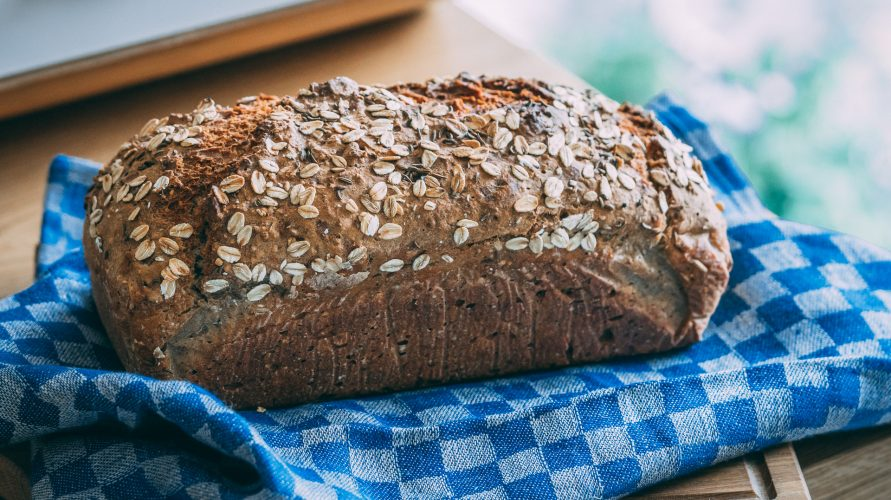

Home
Bread

Ingredients
- 500 g wheat flour
- 7 g dry yeast
- 2 tsp sugar
- 2 tsp salt
- 4 tbsp oats
- 400 ml warm water
- (optional) spices; 2 tbs oregano
- a bit of oil and breadcrumbs to grease the form
Preparation
- Add the yeast to warm water, mix nad put aside for a few minutes.
- Mix other dry ingredients in a big bowl and pour the yeast with water to it.
- Mix everything thoroughly until a compact mass is obtained, then leave the dough in a covered bowl for 30 minutes to let it rise.
- Knead the risen dough gently and put it into a greased and lightly dusted baking tin
- Put the dough in a warm place to grow for a few minutes and put it into a preheated to 200°C oven.
- After around an hour remove from the oven and wait around 15 minutes to let it cool down.
And you are finished. Enjoy!